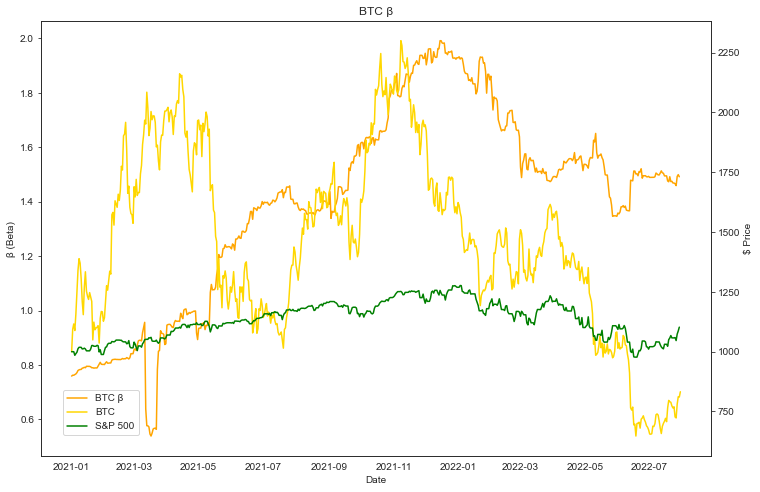
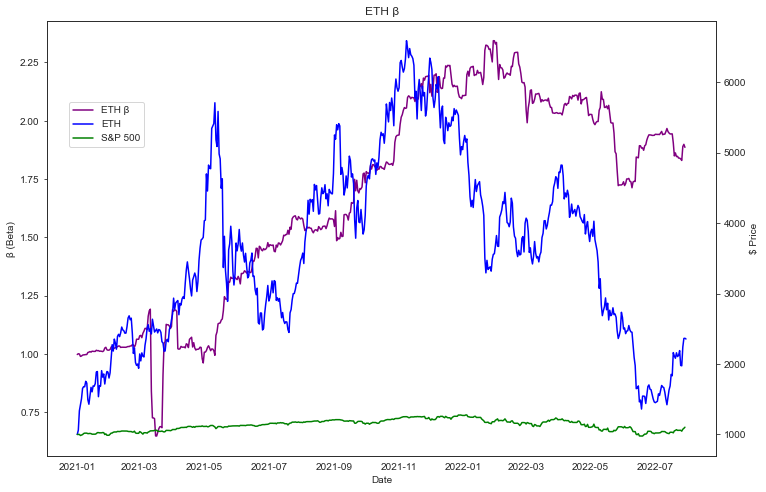
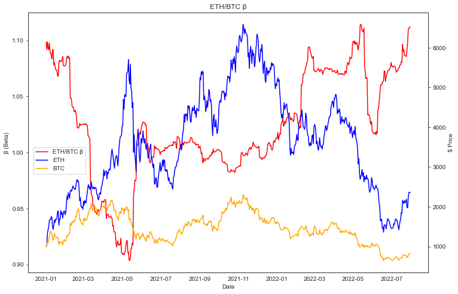
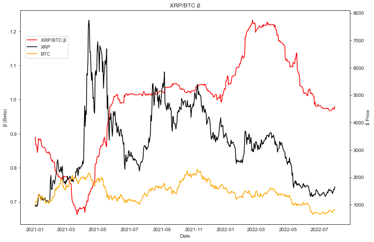

What is Risk? (Beta don't hurt me)
How to measure risk and volatility of crypto assets.
How does an individual figure out how risky their investments are? Discovering the true risk of crypto assets relies on deep understanding of all the underlying technology, the macroeconomic environment, and the diffuseness of that information. Knowing what a new token representing a new technology can do, the potential for the team behind it, and then the environment they are presenting themselves to can make a very educated thesis about the value of a particular token. 📈 Even if one did have an accurate idea of the value of BTC, ETH, or Doggy Doo Doo Coin, you still have to know when that value will be achieved, and how. In TradFi there are a few measurements one can use to measure "risk" based on price action alone. 💹
One of the most popular ways is the Beta of an asset. Beta is a measurement of an asset's volatility against a benchmark, in TradFi land this is the S&P 500 and usually over the past 12 months. So for example something like TSLA will have a Beta of around 2.0 meaning it's about 200% as volatile as the S&P 500. Meanwhile a stock like T (AT&T) that pays a dividend will have a Beta around 0.6 meaning it's about 40% less volatile than the market.
Now what if we do crypto currencies? Certainly we have heard about the correlation between Bitcoin and the market when there isn't supposed to be one. We can measure the Beta of BTC against SPY just the same as with TSLA and T.
12 month rolling beta of BTC vs. ES (S&P 500 futures) since January 1, 2021. Price is normalized to $1000
We can see a really high Beta here, and unfortunately lower returns over the past 18 months as well. One point of importance is that while crypto currencies trade 24/7, traditional equities do are only 5 days a week. This artificially reduces the variance of equities returns when they don't change prices over the weekend. I used S&P 500 futures contracts to capture the extra time they trade on Sunday evening to help compare, but that makes little difference.
Now let's see ETH. Being that ETH is not branded as digital gold and is more akin to a technology company representing the underlying currency of a technology platform we should expect to see a higher Beta here.
Rolling 12 month beta with price normalized to $1000 since January 1, 2021
A much higher Beta, but much higher returns too! Now does that mean ETH is riskier than BTC? Maybe. Maybe not. Maybe its returns will be much higher to justify that "risk."
But why does everything have to be compared to the S&P 500? Only 500 companies don't make up the entire economy. I think it makes more sense to compare things like for like. In crypto I propose to make a Bitcoin Beta and compare all other digital assets against that.
Let's start with ETH, the second major crypto currency. One would expect a very similar variance between the two assets.
Notice y-axis scales here, really not much movement.
And that's just what we got. A Beta that hovers around 1 showing that the two have very similar variances. We also see ETH has higher returns, and with a Beta of 1 that would produce pretty high Alpha, but I'll cover that in another post. 🤫
Ok ok, last one. Let's compare the next biggest non stable coin, XRP.
The beta is for the preceding 12 months so the current beta is right at 1.0
Slightly lower Beta! XRP is definitely less correlated to BTC than ETH. Does that mean it's less risky? Well Beta doesn't take into account pending FTC settlements, so we definitely only have part of the story. But it definitely does help inform our understanding of the risks of some of these investments.
Now I'm done making charts. Hopefully this helped someone understand investing in cryptocurrencies more. It definitely helped me in writing this down. I'll be back with more Alfa, maybe even on the subject of Alpha.